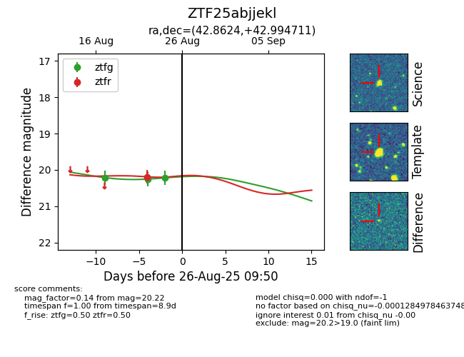

Target ZTF25abjjekl at 2025-08-26 09:55, see:
FINK: fink-portal.org/ZTF25abjjekl
Lasair: lasair-ztf.lsst.ac.uk/objects/ZTF25abjjekl
ALeRCE: alerce.online/object/ZTF25abjjekl
alt names
ZTF25abjjekl (ztf,fink)
coordinates:
equatorial (ra, dec) = (42.8624,+42.99471)
galactic (l, b) = (145.1428,-14.64179)
photometry
last ztfg=20.22, ztfr=20.19
3 ztfg, 1 ztfr detections
